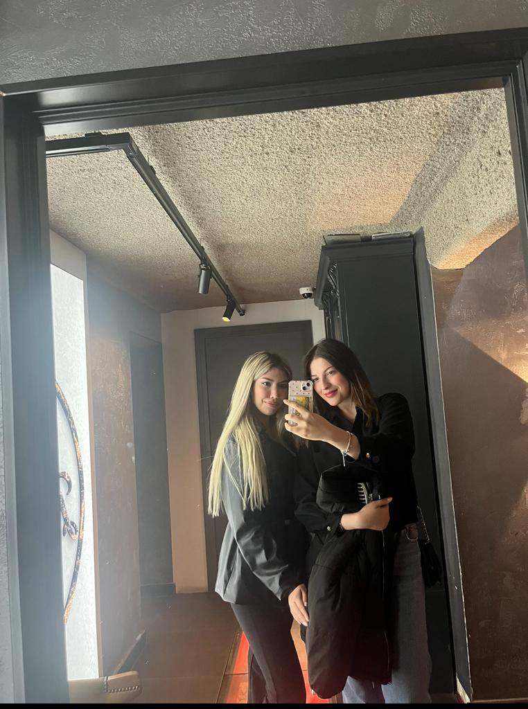
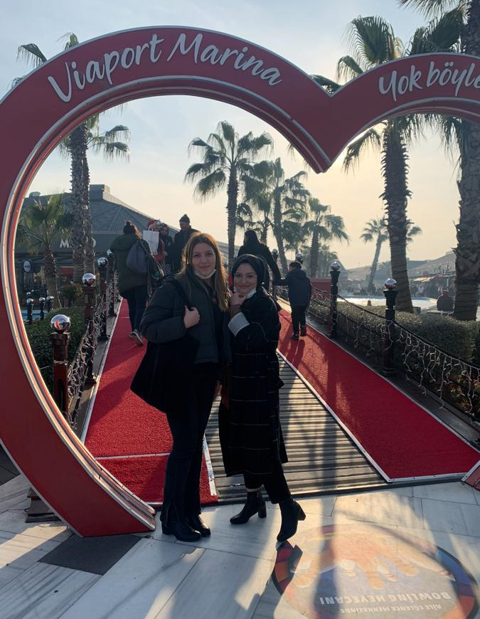
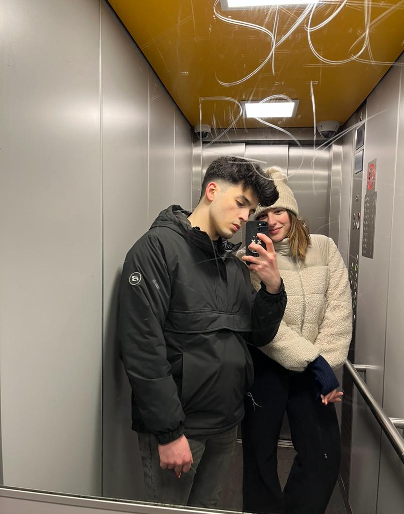
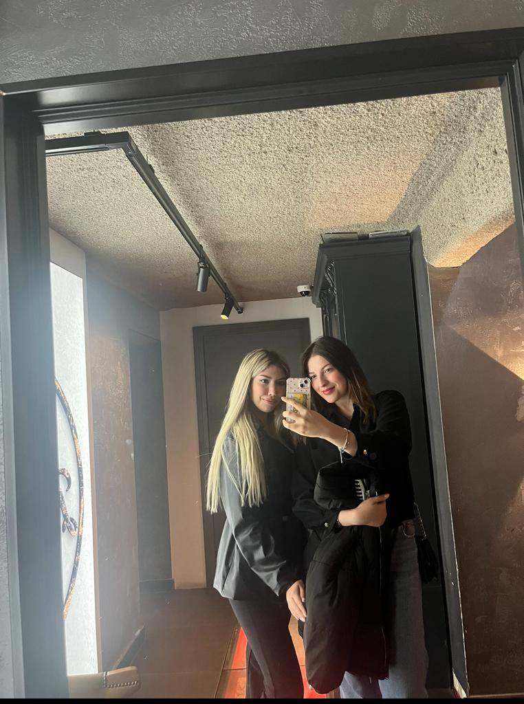
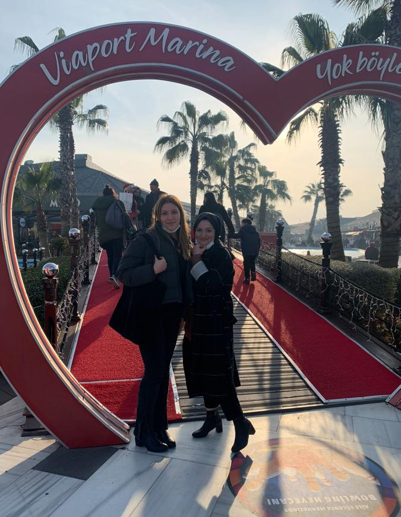
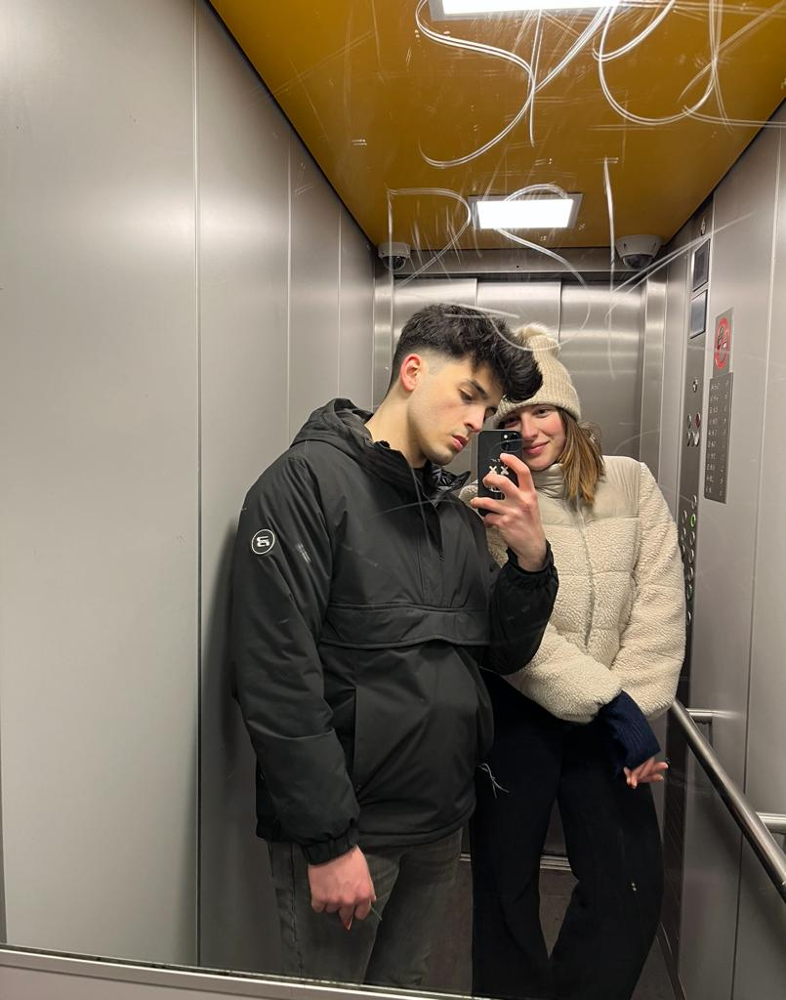
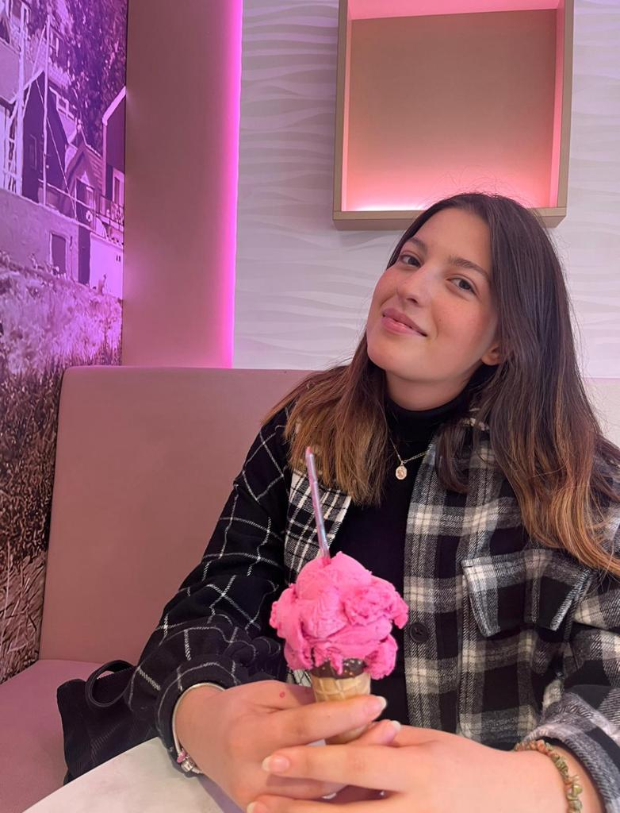
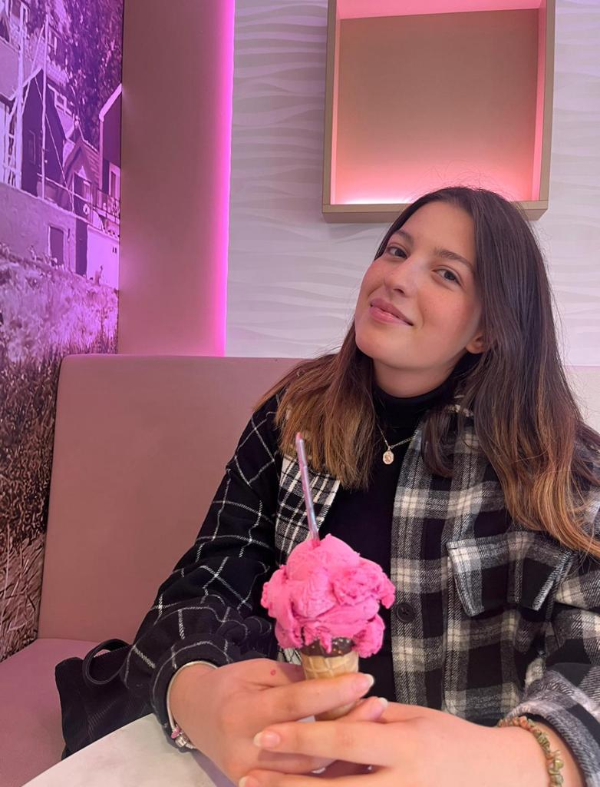

Mijn eigen verhaal
Ten eerste, ik ben al 5 jaar in Nederland. Ik woon hier met mijn vader in Uithoorn, terwijl mijn moeder in Turkije is. Hoewel ik probeer om in de zomers en andere vakanties naar Turkije te gaan, mis ik het vaak maar ik ben ook erg blij om in Nederland te zijn. Toen ik hier kwam was ik 16 jaar oud en nu ben ik 21. Ik heb een jaar taal- en schakeljaar aan de HvA gedaan. Daarna ben ik Bouwkunde gaan studeren maar na 2 maanden ben ik ermee gestopt omdat het me niet beviel. Op aanraden van een vriend ben ik overgestapt naar communicatie en multimedia. Ik denk dat ik me nu ga specialiseren in visual richting in cmd. Studentenleven is behoorlijk stressvol maar tegelijkertijd ben ik erg gelukkig. Ik hoop in de toekomst mijn beroep uit te oefenen en veel landen te bezoeken en nieuwe culturen te leren kennen. Het ontdekken van nieuwe plaatsen is voor mij opwindend. Op dit moment heb ik niet veel geld en tijd vanwege mijn studie maar ik plan om in de toekomst zowel te werken als te reizen. Ik denk dat dit voor mij het beste zal zijn. Als we het over mijn sociale leven hebben houd ik echt van mijn vrienden en ik geniet het meest als ik ergens naartoe ga en samen met hen ben. Mijn vader zegt altijd dat de mensen om me heen erg belangrijk zijn en dat ik ze niet mag kwetsen of pijn doen. Daarom heb ik altijd veel respect voor de mensen om me hebben. Ik vind het fijn om veel vrienden te hebben en nieuwe mensen te ontmoeten.
 





 
